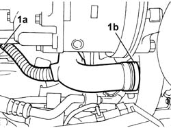
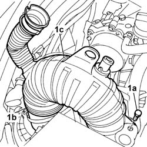

1048A50 air inlet pipe to turbocharger - r + r
- Path
- Procedures > 10 ENGINE > 1048 ENGINE AIR SUPPLY CIRCUIT > 1048A VACUUM AIR CIRCUIT > 1048A50 air inlet pipe to turbocharger - r + r
- Kind
- repair procedure (removal / refitting; the operation number is the code)
- Applies to
- engines: 2.4 JTD 20V; all production periods
- Interactive page
- https://sloeber94.github.io/elrnDB-lThss/en/#/850422
Applies to: engines: 2.4 JTD 20V; all production periods
 Removing
Removing
 Refitting
RefittingSee in Op. 7055B54 PROTECTION/GUARD under engine - R.R.
1. Disconnect the air pipe from the lower resonator (1a) and from the turbocharger (1b).

Applies to: engines: 2.4 JTD 20V; all production periods
- Lower the vehicle.
See in Op. 7040D50 ENGINE COMPARTMENT UPPER SOUND INSULATION SHIELD - R.R.
See in Op. 1016A10 SOUND-PROOFING COVER - R.R.
See in Op. 1048B44 RIGID air supply PIPE from heat exchanger to intake manifold - R.R.
See in Op. 1048A56 UPPER RESONATOR - R.R.
1. Undo the fixing bolt (1a), disconnect the pipe from the air flow meter (1b) and then remove the air inlet pipe (1c).

Applies to: engines: 2.4 JTD 20V; all production periods
Refitting
Removing- Clean the air flow meter thoroughly to avoid damaging the sensitive element.
- Fit the air inlet pipe and connect it to the air flow meter.
- Tighten the bolt fixing the mounting bracket.
See in Op. 1048A56 UPPER RESONATOR - R.R.
See in Op. 1048B44 RIGID air supply PIPE from heat exchanger to intake manifold - R.R.
See in Op. 1016A10 SOUND-PROOFING COVER - R.R.
See in Op. 7040D50 ENGINE COMPARTMENT UPPER SOUND INSULATION SHIELD - R.R.
- Raise the vehicle.
- Connect the turbocharger and the lower resonator air inlet pipe.
Topics linked from this page (5)
- 1016A10 SOUND-PROOFING COVER - R.R.
- 1048A56 UPPER RESONATOR - R.R.
- 1048B44 RIGID air supply PIPE from heat exchanger to intake manifold - R.R.
- 7040D50 ENGINE COMPARTMENT UPPER SOUND INSULATION SHIELD - R.R.
- 7055B54 PROTECTION/GUARD under engine - R.R.
Topics that link to this page (25)
- 0010T40 MANUAL GEARBOX OIL - Change
- 1004B18 POWER UNIT with manual gearbox, with front suspension subframe - R.R.
- 1008A42 Power unit RIGID MOUNT - GEARBOX side - R&R
- 1008B30 Gearbox side mount FLEXIBLE BLOCK/S - Replace
- 1016C10 SINGLE CYLINDER HEAD - R.R. and Replace gasket
- 1020D11 Crankshaft oil seal FRONT COVER - R.R. Replace gasket with timing belt removed - Includes cleaning matching surfaces and applying sealant
- 1020D12 Crankshaft oil seal FRONT COVER - R.R. and Replace seals
- 1028H10 CONNECTING ROD and PISTON SET - R&R
- 1048A10 COMPLETE AIR FILTER -R.R.
- 1048A14 air cleaner filtering element - replace.
- 1048A57 LOWER RESONATOR - R.R.
- 1048B14 air delivery pipe between turbo charger and heat exchanger - replace
- 1064A24 TURBOCHARGER - EXHAUST MANIFOLD - HOSE CONNECTED TO EXHAUST PIPE - R.R.
- 1072C44 Exhaust manifold heat shield on BULKHEAD - R.R.
- 1080C80 Water/exhaust gas heat exchanger for E.G.R. system - R.R.
- 1084B40 Engine oil supply pipe to turbocharger
- 1084C10 Engine oil heat exchanger - R.R.
- 1084C38 Engine oil supply and return pipes to cooling radiator - R.R.
- 1088C30 THERMOSTAT UNIT - R.R.
- 1088D14 UPPER radiator coolant inlet HOSE - R.R.
- 1088E10 Radiator cooling FAN - R.R.
- 1820B46 SUPPLY PIPE FROM MASTER CYLINDER (PUMP) - R.R.
- 3330C10 MASTER CYLINDER (PUMP) - R.R. - Bleed air from brakes separately
- 4130B94 DUPLEX PIPES from cooling coil or heat exchanger radiator - R.R.
- 4410D10 Front suspension FRAME - R.R.